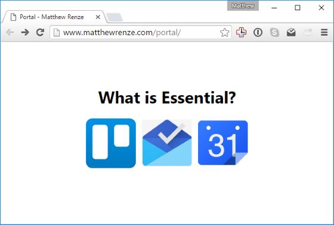

What is Essential?
A homepage to reinforce the habit of focusing on the essential few things that matter.
Author: Matthew Renze
Posted: 2016-07-22

I recently read three books that have had a pretty profound impact on my day-to-day life. The first book was Essentialism: The Disciplined Pursuit of Less. It discusses how to eliminate the noise from your life by focusing on the essential few things that actually make a difference.
The second book was The Power of Habit: Why We Do What We Do in Life and Business. It describes how habits are formed and how old habits can be replaced with new habits using simple techniques based on modern neuroscience.
The third book was Getting Things Done: The Art of Stress-Free Productivity. It discusses a series of techniques for increasing productivity by eliminating the clutter from our thoughts and our lives.
These three books came at the perfect time in my life as I'm currently struggling with managing various demands on my time and attention. Most of these demands on my time and attention are unessential and distracting me from the essential few things that are actually making a difference in my life and my contribution to society.
In addition, the ideas in these books really seem to reinforce one another. Getting Things Done teaches you what to do to be productive. The Power of Habit teaches you how to make it a repeatable set of behaviors. And Essentialism teaches whether or not you should even be doing it in the first place.
After finishing the last of these books, it occurred to me that I've been falling into the bad habit of wasting time on the internet again. I knew that I needed to do something to break this bad habit before it became a bigger issue, so I had an idea to help me replace this habit with a better one.
I decided to create a homepage that would pop up every time I opened my browser on my computer, tablet, or smart phone. This homepage would be a reminder to focus on the essential few things that actually make a difference in my life. In addition, it would act as a subtle deterrent from navigating to facebook, twitter, and reddit for a dose of highly-addictive novelty or cute cat photos.
The homepage is very minimalistic (or "essentialistic", if you will). It contains just the words "What is Essential?" as a reminder to help build the habit of asking myself whether each task I perform is essential or not. In addition, it contains just three icons: Trello for my to-do list, Google Inbox for my email, and Google Calendar for my events and appointments.
These three productivity tools (i.e. to-do list, email, and calendar) are what I've concluded is the best way to organize my workflow according to the principles taught in Getting Things Done. These three tools act as repositories for things I need to remember to do in order to close the "open loops" in my mind so that I can focus on actually getting essential things done without constant distractions popping up in my head.
So far, my plan seems to be working relatively well. According to my browser plug-in Rescue Time (which tracks where I spend my time on the internet) I'm spending significantly less time on sites like facebook, twitter, and reddit since I implemented my new homepage. In addition, since I began implemented the ideas in these three books I feel that I've been significantly more focused, disciplined, and productive.
If you'd like to create your own essentialism homepage for your website, feel free to view, copy, and/or modify the source code in my github repository at: https://github.com/matthewrenze/matthewrenze.com/tree/master/Portal
I highly recommend reading all three of these books. In fact, I highly encourage you to read them back-to-back, like I did. In addition, I'd like to thank my friend Cory House and my brother Ryan for recommending these books.
Share this article: